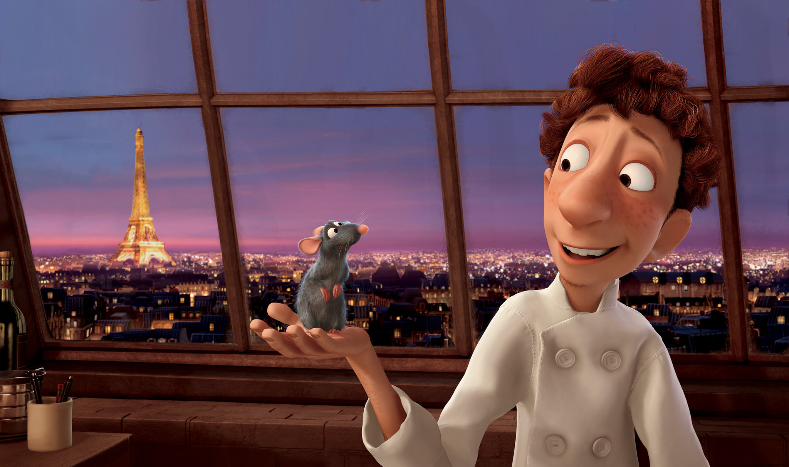

Background Info
Ratatouille is a 2007 American computer-animated comedy film produced by Pixar and released by Walt Disney Pictures. It was the eighth film produced by Pixar, and was written and directed by Brad Bird, who took over from Jan Pinkava in 2005, and produced by Brad Lewis, from an original idea from Bird, Pinkava and Jim Capobianco. The title refers to the French dish ratatouille, which is served at the end of the film and also references the animal type of the main character, a rat. The plot follows a rat named Remy, who dreams of becoming a chef and tries to achieve his goal by forming an alliance with a Parisian restaurant's garbage boy.
The film stars the voices of Patton Oswalt as Remy, an anthropomorphic rat who is interested in cooking; Lou Romano as Alfredo Linguini, a young garbage boy who befriends Remy; Ian Holm as Skinner, the head chef of Auguste Gusteau's restaurant; Janeane Garofalo as Colette Tatou, a rôtisseur at Gusteau's restaurant and the staff's only female chef; Peter O'Toole as Anton Ego, a restaurant critic; Brian Dennehy as Django, Remy's father and leader of his clan; Peter Sohn as Emile, Remy's older brother; and Brad Garrett as Auguste Gusteau, a recently deceased chef.
The development of Ratatouille began in 2000 when Pinkava wrote the original concepts of the film. In 2005, following Pinkava's departure from Pixar, Bird was approached to direct the film and revise the story. Bird and some of the film's crew members also visited Paris for inspiration. To create the food animation used in the film, the crew consulted chefs from both France and the United States. Lewis interned at Thomas Keller's The French Laundry restaurant, where Keller developed the confit byaldi, a dish used in the film. Michael Giacchino composed the Paris-inspired music for the film.
Ratatouille premiered on June 22, 2007, at the Kodak Theatre in Los Angeles, California, with its general release June 29, 2007, in the United States. The film grossed $620.7 million and was a box office success. It received widespread critical acclaim for the voice acting, writing, direction, animation and Michael Giacchino's score. The film won the Academy Award for Best Animated Feature and was nominated for four more, including Best Original Screenplay. It was later voted one of the 100 greatest motion pictures of the 21st century by a 2016 poll of international critics conducted by the BBC.